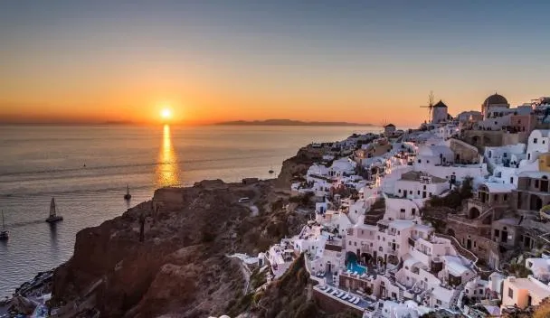
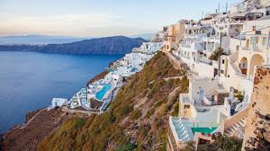
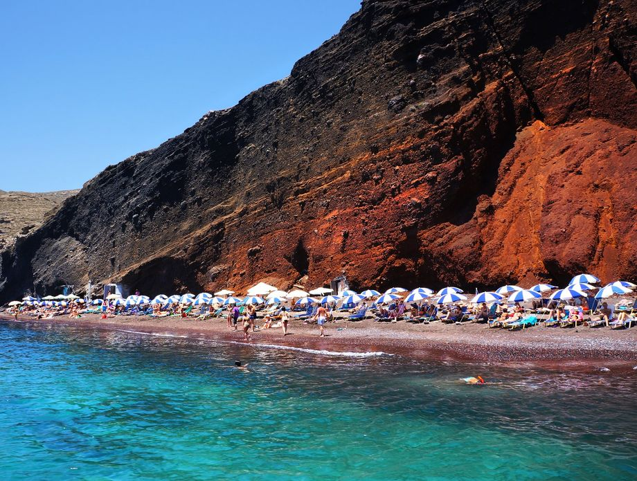

<!DOCTYPE html>
<html>
    <head>
        <title>Santorini</title>
        <link rel="stylesheet"href="Santorini.css">
    </head>
</html>
<body>
      <ul>
    <li><a href="Početna stranica.html">Početna stranica</a></li>
    <li><a href="O Grčkoj.html">O Grčkoj</a></li>
    <li><a href="Destinacije.html">Destinacije</a></li>
    <li><a href="Kultura.html">Kultura</a></li>
</ul>
 <h1 class="Santorini"><center>Santorini</center></h1>
 <br><br><br><br><br><br><br><br>
 <p>Santorini, jedan od najpoznatijih grčkih otoka, poznat je po spektakularnim zalascima sunca, bijelim kućama s plavim kupolama i plavom Egejskom moru. Smješten u srcu Egejskog arhipelaga, otok je prava turistička i kulturna perla Grčke.</p>
 <h2>Priroda i krajolik</h2>
 <p>Santorini je vulkanskog porijekla, a njegove strme litice i krateri (kaldera) stvaraju jedinstven pejzaž. Plaže s crnim, crvenim i bijelim pijeskom te kristalno čisto more privlače posjetitelje iz cijelog svijeta.</p>
<h2>Povijest</h2>
<p>Otok ima bogatu povijest koja seže do minojske civilizacije. Arheološka nalazišta poput Akrotirija svjedoče o razvijenoj kulturi i naprednoj arhitekturi drevnih stanovnika.</p>
<h2>Kultura i običaji</h2>
<p>Santorini njeguje grčku tradiciju kroz lokalne festivale, glazbu i gastronomiju. Posjetitelji mogu uživati u vinskim turama, degustaciji svježih morskih plodova i autentičnih grčkih jela, dok lokalni običaji čuvaju duh otoka.</p>
<h2>Turizam</h2>
<p>Santorini je poznat i kao romantična destinacija, idealna za medeni mjesec, fotografiranje i opuštanje. Gradovi Fira i Oia nude slikovite ulice, kafiće s panoramskim pogledom i nezaboravne zalaske sunca.<br>
Santorini je kombinacija prirodne ljepote, bogate povijesti i autentične grčke kulture – savršeno mjesto za nezaboravan odmor.</p>
<h2>Najvažnije atrakcije</h2>
<div class="galerija">
    <div class="stavka">
        <h3>Oia</h2>
        
        <p> Kultno mjesto za promatranje najljepših zalazaka sunca na svijetu, s prepoznatljivom arhitekturom</p>
    </div>

    <div class="stavka">
        <h3>Fira</h3>
        
       <p>Glavni grad s živahnom atmosferom, barovima, restoranima i odličnim vidicima na kalderu.</p>
    </div>

    <div class="stavka">
        <h3>Crvene i crne plaže</h3>
        
        <p>Vulkanskog porijekla, s plažama Perissa i Kamari koje su poznate po crnom pijesku.</p>
    </div>
</div>

<style>
    .galerija {
        display: flex;
        gap: 50px; 
    }

    .stavka {
        text-align: center;
    }

    .stavka img {
        width: 350px;    
        height: 250px;
        display: block;
    }

    .stavka a {
        display: block;
        margin-top: 8px;
        text-decoration: none;
        font-size: 20px;
        color: #000;
    }
</style>
</body>
<br><br><br><br><br><br>
<footer class="footer">
  <p> Hana Šerbeđija<br> 2.c</p>
</footer>